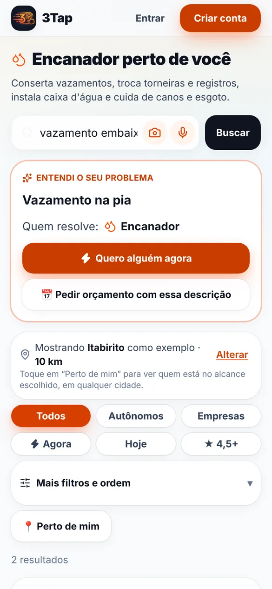
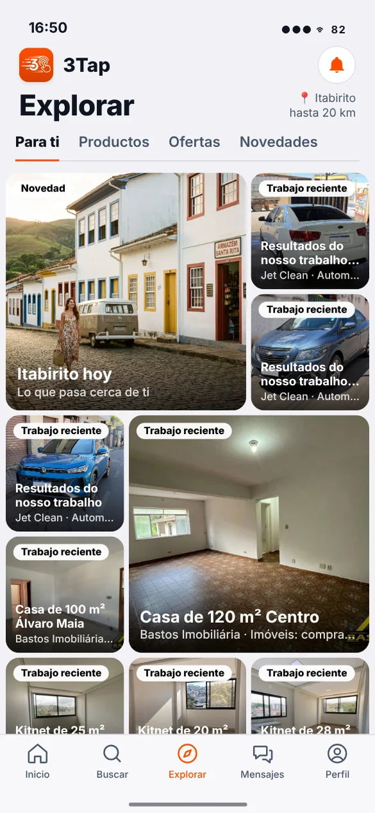
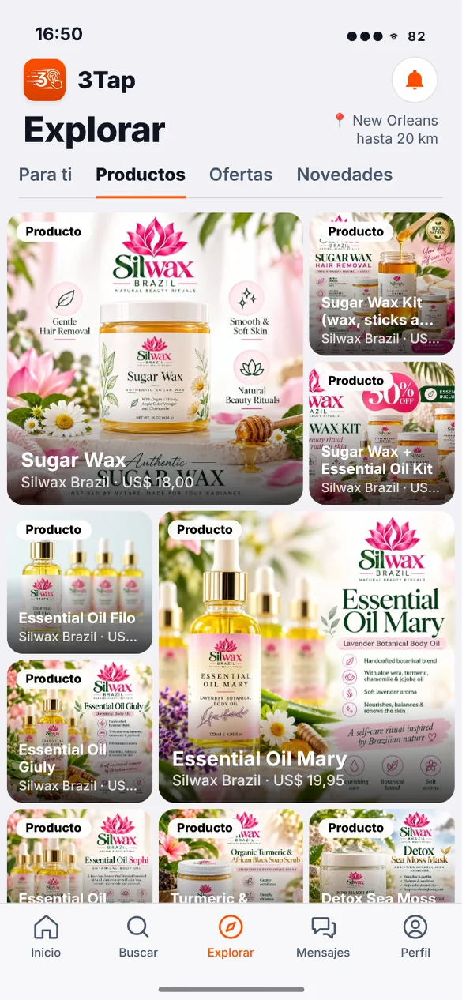
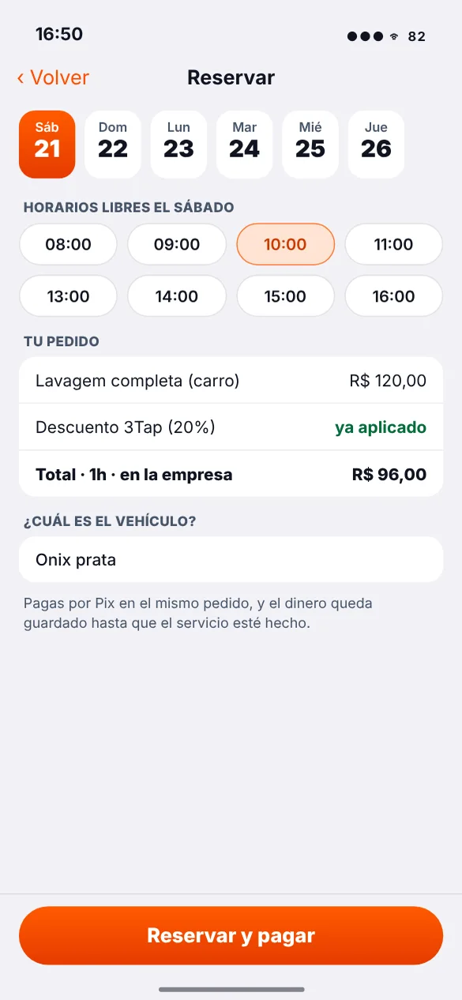
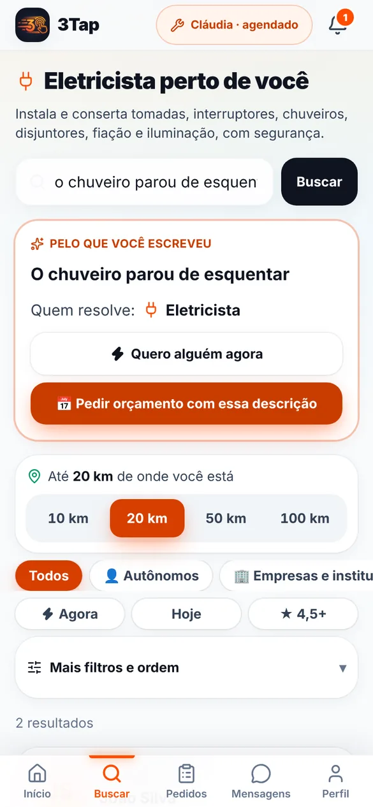
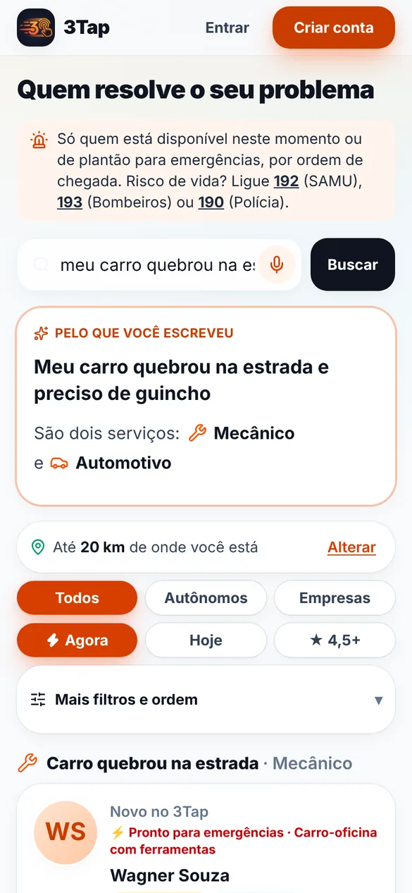
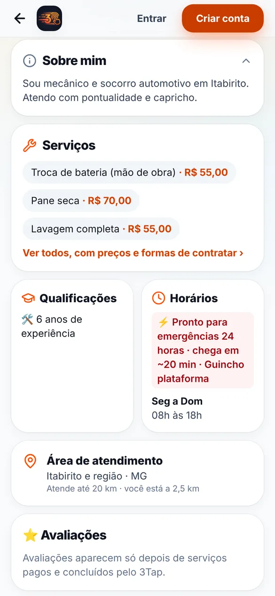
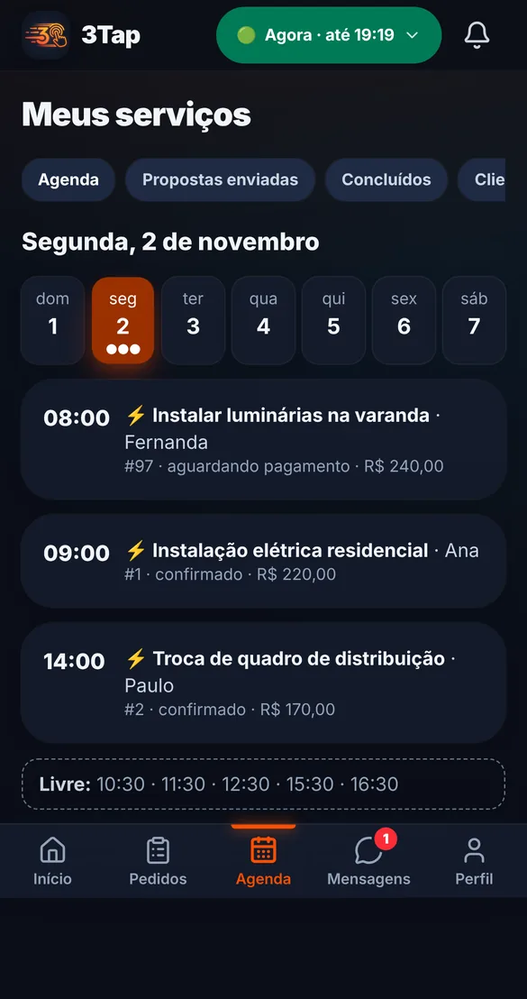

⚡
Contratar ahora
Para servicios con precio conocido: eliges el servicio, confirmas precio y horario y pagas. Sin video, sin espera.
Grúa · flete · empleada por día · manicuraNo necesitas saber a quién buscar. Escribe, habla o envía una foto del problema: 3Tap te muestra profesionales y empresas disponibles cerca de ti, con precio y reseñas reales.
Conversa, acuerda, paga y sigue todo en la app. Más de 40 tipos de servicio, de electricista a cuidador de personas mayores. Reputación construida solo con servicios contratados de verdad.

Apunta la cámara del celular. El código abre la tienda correcta para tu equipo.
Cuando 3Tap llegue a Google Play, desinstala esta versión antes de instalar desde la tienda. Para suscribirte a un plan de profesional, usa el sitio web por ahora.
O úsalo directamente en el navegador del celular o de la computadora.



Tiendas, la vida de tu ciudad, empresas con agenda y pago, y apps nativas para iPhone y Android, en portugués, inglés y español.
Las empresas con tienda muestran sus productos con fotos y precio. Tú miras, conversas y acuerdas directamente con la tienda.
🧭ExplorarProductos, ofertas y lo que pasa en tu ciudad: trabajos recientes, reseñas nuevas y quién acaba de llegar, hasta 20 km de ti.
🏢Empresas con agenda y PixElige los servicios de la empresa, reserva el horario y paga en la app, con el mismo pago protegido de los autónomos.
⭐Reseñas e informeSolo reseña quien contrató de verdad. Al final, el servicio genera un informe en PDF con código QR para verificar el registro.
🔎Búsqueda por nombre¿Ya sabes a quién quieres? Escribe el nombre de la persona o de la empresa y encuéntrala en cualquier ciudad.
📱Apps nativasiPhone y Android con las mismas pantallas y funciones. La app habla portugués, inglés o español, según tu celular.
En la pestaña Explorar ves los productos y las ofertas de las empresas cerca de ti, y también la vida de la ciudad: el trabajo que se acaba de hacer, la reseña nueva, el profesional que llegó. Nunca aparece una oferta vencida ni un producto sin stock.
En la compra de productos, el pago y la entrega se acuerdan directamente con la tienda. 3Tap no recibe el valor de la venta ni cobra comisión sobre ella.


Lavadero, escuela, salón, taller: la página de la empresa muestra los servicios con duración y precio. Marcas lo que quieres, eliges el horario libre y pagas por Pix en el pedido. Si el servicio necesita evaluación, la empresa envía el valor antes de que pagues.

¿No sabes si es cosa de plomero, electricista u otro especialista? Cuenta lo que pasa a tu manera. 3Tap entiende, descubre quién lo resuelve, verifica quién atiende tu zona y tiene horario, y muestra las mejores opciones. Sin formularios, sin interrogatorios.
La indicación es una sugerencia para empezar: puedes cambiar la profesión cuando quieras. 3Tap no hace diagnósticos técnicos por foto ni inventa precios u horarios: quien evalúa y confirma es el profesional.


Pintar la casa la semana que viene es una cosa. Necesitar una grúa a las 23 h, solo, en la carretera, es otra. Por eso 3Tap tiene un camino solo para urgencias: muestra únicamente a quien está disponible en este momento, por orden de llegada.
¿Riesgo de vida, incendio o violencia? Llama antes que nada: 192 SAMU · 193 Bomberos · 190 Policía (Brasil). 3Tap no sustituye estos servicios.


Cada servicio muestra la forma que tiene sentido para él. No necesitas entender ninguna regla: la app te muestra el siguiente paso.
Para servicios con precio conocido: eliges el servicio, confirmas precio y horario y pagas. Sin video, sin espera.
Grúa · flete · empleada por día · manicuraEl profesional pide una inspección. Grabas un video corto del problema en la misma conversación, cuando puedas. Él lo mira y envía el precio cerrado. Aceptas, pagas y el precio no cambia.
✓ Precio cerrado por video Electricista · plomero · albañil · aire acondicionadoPara trabajos más grandes: describes, envías fotos y videos, el profesional pregunta o agenda una visita y envía la propuesta detallada. Puedes pedir un ajuste en vez de solo rechazar.
Obras · pintura · carpintería · eventosCuando el servicio depende de una evaluación, no pagas antes de saber el precio final. Los adicionales se presupuestan y los apruebas antes de hacerlos.
Cada contratación es un pedido con número propio. Arriba, el profesional y el estado. Abajo, tres pestañas: Chat (mensajes, fotos, videos, audios y llamadas), Avance (lo que se hizo y lo que falta) y Pago. Nunca necesitas salir del pedido para enviar un valor o pagar.
¿Aceptaste el precio? Paga por Pix dentro del pedido. El valor queda guardado y se libera al profesional cuando confirmas la conclusión. Si algo sale mal, Reportar problema retiene la liberación hasta que el equipo lo analice.
Pagos procesados por una institución autorizada por el Banco Central de Brasil. 3Tap no ve ni guarda tus datos bancarios.
La tarjeta del profesional muestra su situación en ese momento, controlada por el sistema: distancia, disponibilidad y precio. Y el orden no es solo quién está más cerca: quien cumple lo que promete va primero.
El profesional puede salir ahora. Llamas y recibe la alerta al instante.
⚡ LLAMARTodavía tiene horario hoy. Eliges el que mejor te queda.
RESERVAR PARA HOYMira los días y horarios libres en la agenda. Al elegir, el horario queda reservado para ti hasta la confirmación.
VER AGENDA
Cada tarjeta y cada perfil muestran lo que importa para decidir, sin abrir diez pantallas.
Los documentos y calificaciones aparecen como enviados por el propio profesional. Una nota baja o una cancelación aislada nunca bloquean a nadie automáticamente: generan verificación, no castigo.
Dentro de la app, en tu perfil. Empieza con el asistente automático, que resuelve la mayoría de las dudas al instante: cómo cambiar la foto, ampliar el alcance, por qué no encuentro profesionales, mi pago no apareció. Si no se resuelve, una persona del equipo se encarga.
El asistente avisa que es automatizado, no toca pagos ni tus datos, y nunca te obliga a pasar por diez preguntas antes de hablar con alguien.
Instagram muestra lo que haces. 3Tap te trae a quien necesita lo que haces. Sin seguidores, anuncios ni marketing: el cliente describe el problema y 3Tap te llama.
"Tu reputación es tu mayor activo."

El dinero compra más oportunidades, nunca una nota mejor ni el primer lugar. Sin pagar nada, sigues en las búsquedas.
Perfil, presencia en las búsquedas, llamados, agenda y pago por la app. La tarifa es solo sobre la mano de obra del servicio hecho: empieza en 15% y baja hasta 8% con tu Mérito.
Portafolio completo: hasta 30 fotos y 5 videos, antes y después, álbumes, portada y estadísticas de tu perfil.
Todo lo del Pro, más Regiones de Actuación para atender otros barrios y ciudades, Radar de Oportunidades y estadísticas avanzadas.
Página de la empresa y presencia en las búsquedas.
Presenta tu empresa: servicios con agenda y pago por la app.
Fortalece tu marca: sello Empresa Premium, colores y portada de tu marca.
Todo lo del Premium, más tu tienda: productos y ofertas en Explorar.
Toca un servicio para ver quién atiende cerca de ti.
Empezó en Itabirito (MG, Brasil) y funciona a partir de tu ubicación, en cualquier ciudad. Empieza cerca y amplía el alcance (10, 20, 50 o 100 km) cuando quieras más opciones.
¿No encontraste tu respuesta? Abre la app y habla con el Centro de Ayuda desde tu perfil.
No. Crear una cuenta es gratis, y el cliente paga solo el valor acordado con el profesional, sin tarifa extra. La tarifa de la plataforma se descuenta del valor que recibe el profesional autónomo, y él la ve antes de enviar el precio. Las empresas tienen planes propios, a partir del Inicial, que es gratis.
Aceptas el precio y pagas por la app, por Pix, dentro del propio pedido. El dinero queda guardado hasta que confirmes que el servicio se concluyó. Entonces se libera al profesional. El pago lo procesa una institución autorizada por el Banco Central de Brasil.
Toca Reportar problema en el pedido. La liberación del dinero queda bloqueada hasta que el equipo de 3Tap analice la conversación y el historial. El equipo puede liberar el valor, devolver todo o devolver una parte.
Sí, y las reglas aparecen en el pedido antes de que decidas. En la contratación inmediata, cancelar es gratis hasta que el profesional esté “en camino”; en la agendada, hasta 24 horas antes. Si es el profesional quien desiste antes de empezar, recibes todo de vuelta.
Escribe, habla o envía una foto del problema. 3Tap indica la profesión y muestra quién atiende tu zona, con horario libre en la fecha que pediste. Puedes cambiar la profesión si prefieres.
Un camino solo para urgencias: grúa, cerrajero, electricista, plomero, mecánico, refrigeración. 3Tap muestra únicamente a quien está disponible en ese momento, por orden de llegada, y envía el llamado directo al profesional. En una emergencia con riesgo de vida, llama al 192, 193 o 190 (Brasil): 3Tap no sustituye esos servicios.
Cuando el profesional lo pide, aparece el botón Grabar video en la conversación. Grabas un video corto del problema, él lo mira y envía el precio cerrado. No hace falta que los dos estén libres al mismo tiempo. La videollamada en vivo sigue como opción.
Mira la nota, las reseñas verificadas (solo de quien contrató y pagó por la app), el porcentaje de servicios concluidos, el tiempo de respuesta y el portafolio. Los documentos y calificaciones aparecen como enviados por el propio profesional: 3Tap no los presenta como verificados.
No. Cliente y profesional conversan por el chat y las llamadas de voz y video del propio 3Tap, y el número de nadie aparece.
Sí. Talleres, escuelas, salones, cursos y otros negocios tienen página comercial y aparecen en las búsquedas al lado de los autónomos. Empiezan en el plan Inicial, que es gratis, y pueden elegir un plan mensual con más recursos.
3Tap empezó en Itabirito (MG, Brasil) y funciona a partir de tu ubicación, en cualquier ciudad. Donde todavía hay pocos profesionales, la app amplía el alcance sola, busca en ciudades vecinas y avisa cuando aparezca alguien compatible.
Crea tu cuenta, elige Trabajar y registra tus servicios, precios, zona de atención y disponibilidad. Listo: ya apareces para clientes cerca de ti. Si ya tienes cuenta como cliente, solo activa el modo profesional en Perfil.
Cuando alguien entra en 3Tap por tu recomendación, la comisión que la app ganaría sobre los servicios de esa persona en el primer mes es para ti. Después del primer mes, vuelve a lo normal.

Los profesionales y empresas correctos, disponibles cerca de ti. Chat, precio, pago y seguimiento en un solo pedido.
Apunta la cámara del celular. El código abre la tienda correcta para tu equipo.
Cuando 3Tap llegue a Google Play, desinstala esta versión antes de instalar desde la tienda. Para suscribirte a un plan de profesional, usa el sitio web por ahora.
O úsalo directamente en el navegador del celular o de la computadora.
¿Eres profesional o tienes una empresa y quieres recibir llamados?
Quiero ofrecer mis servicios3Tap · Tocas y llegan.